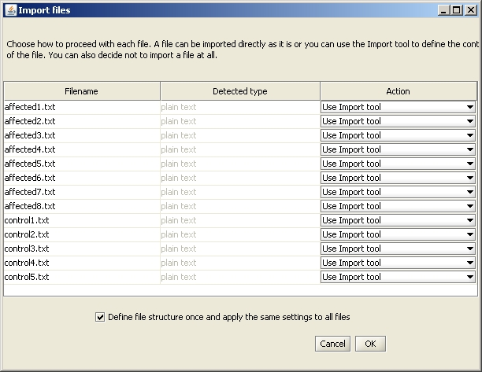
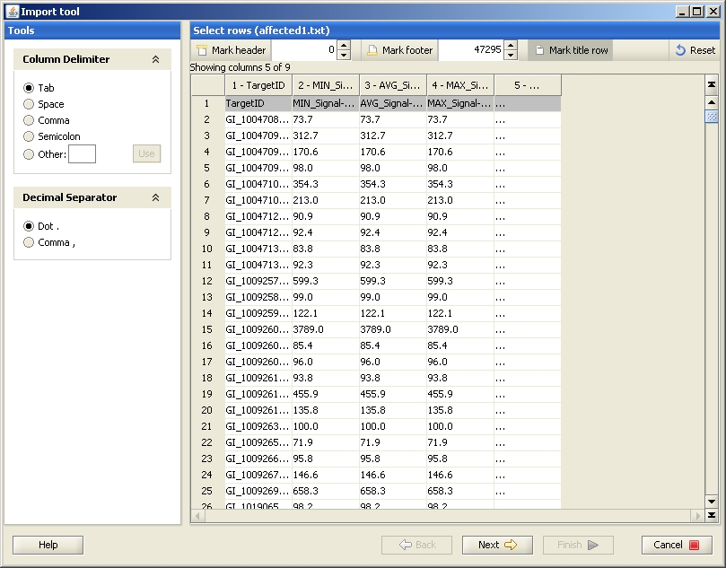
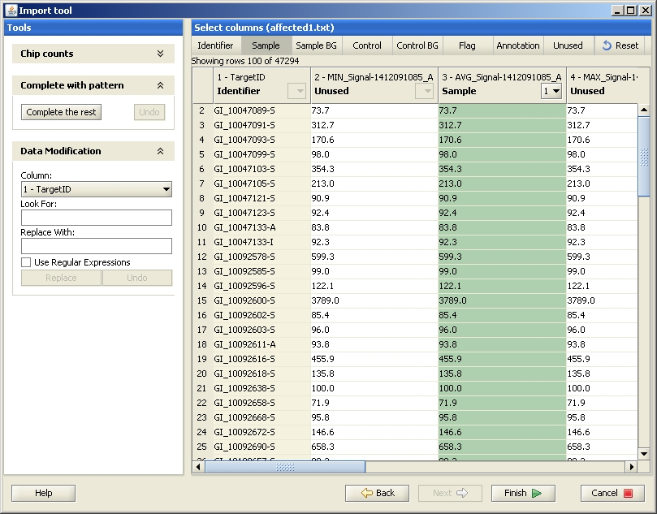

You have two alternatives for importing Illumina data:
When you have selected file(s) to import, the "Import files" dialog opens. Select the Action "Use Import tool" for all your files.
Clicking "OK" opens the first window of the Import tool. Define the title row by clicking on the "Mark title row" -button on the top, and click the row you want to mark as a title row. If your data was created with BeadStudio version 1 or 2, your file also contains a header which needs to be marked (click on the Mark header -button on the top, and paint the rows you want to mark as a header).
Next you need to select the columns you would like to import to Chipster. The exact column names in the original data file vary depending on which BeadStudio/GenomeStudio version (1-3) was used for creating it. However, the columns with "AVG" always contain the expression values and should hence be labeled as "sample" in the Import tool.
To define the columns, select the meaning by clicking on the button on the top of the page, and then click on one of the columns (not the greyed header).
To conclude the import, click on the Finish-button. After the data has been imported, it is displayed as several files (as many files as sample columns were selected) under Datasets and in the Workflow view. Now the data has been successfully imported, and you should normalize it. You can also run some quality control checks after the normalization.